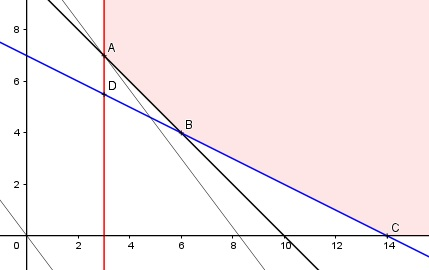

Aufgabe 93 Zur Herstellung einer Legierung braucht man die Metalle S, T und U in einer vorgegebenen Mindestmenge M. Sie befinden sich als Bestand- teile in den Erzen E und F. Die Verteilung zeigt die Matrix: E F M S in t 0,1 0 0,3 T in t 0,1 0,1 1 U in t 0,1 0,2 1,4 Erz E kostet 20 € pro Tonne, Erz F 15 €. Wieviel t E und F braucht man, wenn die Kosten K minimal sein sollen? Bedingungen: x = Erz E in t y = Erz F in t 0,1x ≤ 0,3 0,1x + 0,1y ≥ 1 0,1x + 0,2y ≥ 1,4 x ≥ 0 x ∈ ℝ y ≥ 0 y ∈ ℝ Zielfunktion: K = 20x + 15y Randgerade 1: 0,1x = 0,3 Randgerade 2: 0,1x + 0,1y = 1 Randgerade 3: 0,1x + 0,2y = 1,4

Das Planungsgebiet liegt rechts und oberhalb der Strecke ABC und erfüllt alle Ungleichungen. Eckpunkt A ist der Schnittpunkt der Randgeraden 1 und 2: 0,1x = 0,3 (1) 0,1x + 0,1y = 1 (2) Aus (1): 0,1x = 0,3 |:0,1 x = 3 Eingesetzt in (2): 0,1 * 3 + 0,1y = 1 |-0,3 0,1y = 0,7 |:0,1 y = 7 A(3|7) Punkt D ist der Schnittpunkt der Randgeraden 1 und 3: 0,1x = 0,3 (1) 0,1x + 0,2y = 1,4 (2) Aus (1): 0,1x = 0,3 |:0,1 x = 3 Eingesetzt in (2): 0,1 * 3 + 0,2y = 1,4 |-0,3 0,2y = 1,1 |:0,2 y = 5,5 D(3|5,5) liegt nicht im Planungsgebiet, erfüllt nicht die Bedingung 0,1x + 0,1y ≥ 1 Die Parallele zur Zielfunktion K durch A liegt am tiefsten --> Er muss 3 t Erz A und 7 t Erz B zur Herstellung der Legierung nehmen, dann sind die Kosten K minimal. Kmin = 20 * 3 + 15 * 7 = 165 €